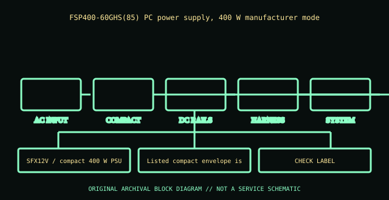

[ POWER CONVERSION // IDENTIFIED MODEL ]
FSP400-60GHS (85)
FSP400-60GHS(85) PC power supply, 400 W manufacturer model. This entry covers the specific model or bounded historical system assembly identified here; suffixes and supplier revisions are not presumed equivalent.

HIGH-VOLTAGE SAFETY: Disconnect mains before external inspection. Never open a PSU. Internal capacitors can retain dangerous charge after disconnection. Do not probe or repair its interior; use qualified service or replace it.
Model-specific ratings & fit
| Manufacturer identity | FSP400-60GHS(85) PC power supply, 400 W manufacturer model |
|---|---|
| Form factor / generation | SFX12V / compact 400 W PSU; verify exact enclosure variant |
| AC input | 100–240 V AC, 47–63 Hz; exact suffix/nameplate controls. |
| DC output | 400 W overall; +3.3 V 20 A, +5 V 22 A, +12 V1 and +12 V2 16 A each (peak 19 A), −12 V 0.5 A, +5 VSB 2.5 A (peak 3 A), per (85) datasheet. |
| Dimensions / mounting | Listed compact envelope is typically 125 × 100 × 64 mm; verify the exact submodel drawing and mounting flange. |
| Connectors | OEM harness variant may provide ATX 24-pin, CPU and drive connectors; verify exact 60GHS(85) drawing before replacement. |
| Revision distinctions | “(85)” is part of the specific revision identifier; other FSP400-60GHS revisions may change rails, casing and wire harness. |
Compatibility & safe handling
- Verify full model, suffix, region and revision using the actual unit nameplate and matching manufacturer manual. Wattage and plug shape alone do not establish compatibility.
- Check AC input range, rail and combined output limits, derating, signaling/pinout, cooling direction, mounting and system qualification before installation.
- PSU modular-side cables are model-specific. Never reuse an unapproved lead; a matching plug can carry a different pinout.
- Server hot-plug is permitted only in qualified host configurations and under the host’s documented redundancy/live-service procedure.
- Never open or internally probe the supply. Retire damaged, wet, burnt, corroded, modified or unidentified units.
Revision & archival notes
“(85)” is part of the specific revision identifier; other FSP400-60GHS revisions may change rails, casing and wire harness.
Use model datasheet and actual label to distinguish OEM/retail harness. Do not treat the same wattage model as interchangeable.
Photograph the full nameplate, model/FRU, supplier, revision/date code, line selector, cable ends, mounting orientation and source-document issue. Keep observed label data separate from test results.
Manufacturer or primary references
- FSP400-60GHS (85) — manufacturer/product or primary technical referenceFSP400-60GHS(85) PC power supply, 400 W manufacturer model. Check the exact revision, region and system support information.
- Intel ATX / ATX12V Power Supply Design GuideReference for desktop ATX context only. Proprietary historical and hot-swap server outputs are not made interchangeable by ATX standards.
The specific PSU nameplate and corresponding model/service documentation remain controlling.